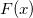
と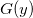
について、サンプルサイズが/math-8d88a43872d6db6535d8672a15f09ce2.png "n_1\,\!") および
および /math-ede03c8aef1b07c898c7747b489fd765.png "n_2\,\!") であると考えます。サンプルデータはそれぞれ
であると考えます。サンプルデータはそれぞれ 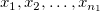
および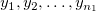
と表します。2つの独立した標本     および であると考えます。サンプルデータはそれぞれ
帰無仮説 : 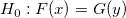/math-7cd11b458088b7785f332b5101ecd466.png "H_1\,") に対して検定が実行されます。内容としては、
に対して検定が実行されます。内容としては、
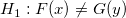
;または/math-6b206a28e60f665e235f89f460448467.png "x\,") の傾向が
の傾向が/math-ec9ff0a12771e750c2685d3b89a37c79.png "y\,") よりも大きくなる場合、
よりも大きくなる場合、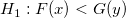
;またはの傾向がよりも小さくなる場合、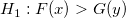
検定手順は以下のステップのようになります。
/math-312ce869e8967ee6fff1453ef5e28c4c.png "x_i \,\!") と
と /math-015fcddf5978e5b63ac9135bd7bdae23.png "y_i\,\!") を1つのグループに組み合わせます。
を1つのグループに組み合わせます。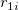
をに割り当てられる順位(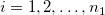
において)と、に割り当てられる順位( 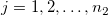
において)とします。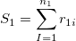
, および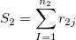
です。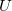
は次のように表すことができます。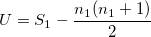
/math-77698ae92ac0435f8da1e266eeb528e3.png "z\,") は次のように計算されます。
は次のように計算されます。
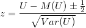
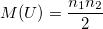
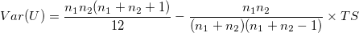
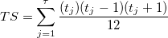
.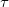
は、標本内で同順位の数で、/math-df204135239c5bf5c4634a38c3b9b470.png "t_j\,") は、j 番目のグループの同順位数です。
は、j 番目のグループの同順位数です。/math-d48c86a2e46b00c5cd98ca6169fed589.png "U \,") の分散は
の分散は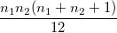
のようになります。
このアルゴリズムの詳細は、nag_mann_whitney (g08amc)をご覧下さい。